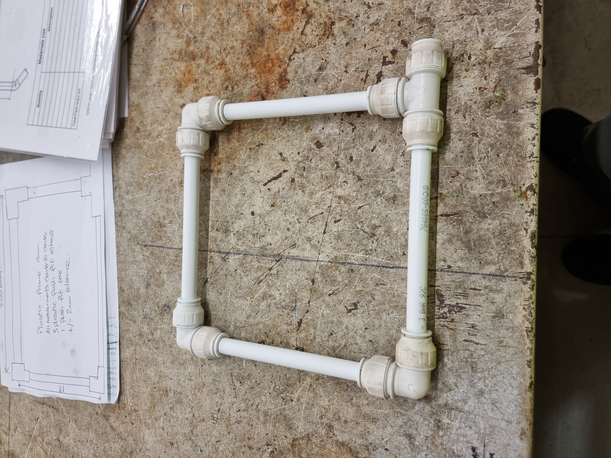

💧 Physical Infrastructure & Systems
🔧 Infrastructure Routing & Troubleshooting
The System: Level 2 qualification standard layouts, managing complex physical routing, pressure dynamics, and layout diagnostics.
The DevOps Connection: This experience directly translates to digital architecture—understanding how inputs route through a system, managing flow constraints, and preventing system critical failures or "leaks."

Image 1001 of 1099